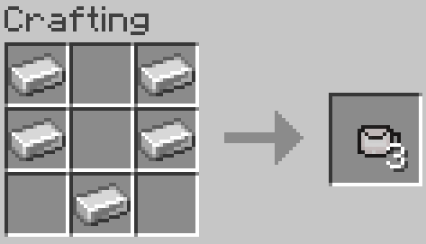
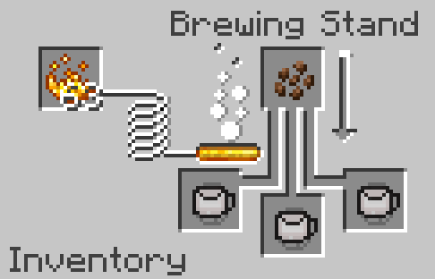
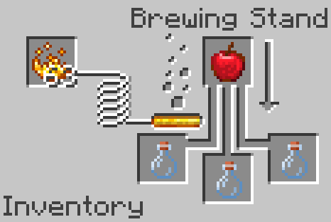
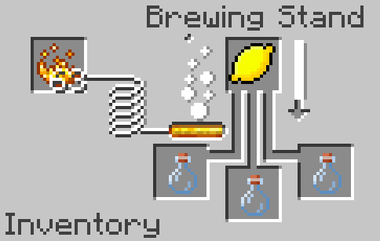
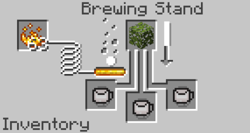

Drinks
Nice, healthy(mostly), and provide some extra effects.
Hot Chocolate
Nice and cost, provides regeneration and is used by brewing Cocoa Beans into a mug. Recipe for mug found below.
 Apple Juice
Apple juice is a quicker way to obtain a short Jump Boost potion. It's made by brewing an Apple into Glass Bottles.
Lemonade
Lemon! Brew a Lemon into Glass Bottles to get a quick and easy Instant Health potion.
Tea
Some nice tea, similar brewing recipe to hot chocolate but use Azalea Leaves instead of Cocoa. The tea gives Saturation II.
